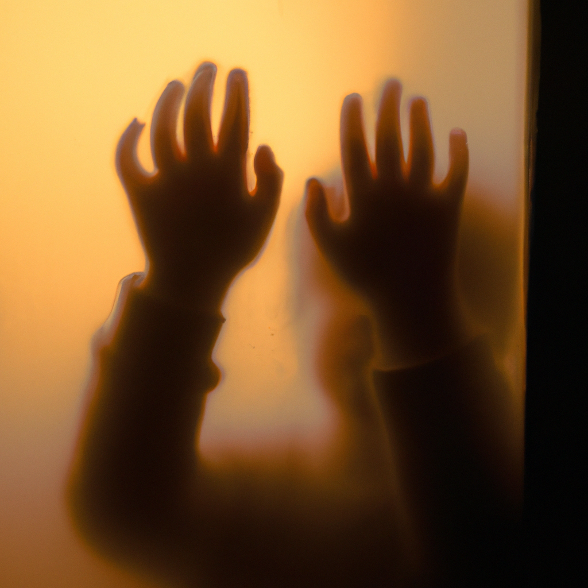

At dusk, the old rocking chair swayed on its own, creaking a lullaby that warmed my bones and chilled my heart. Through the window, a phantom child pressed tiny hands against the glass, whispering my name in a breathy hush.
